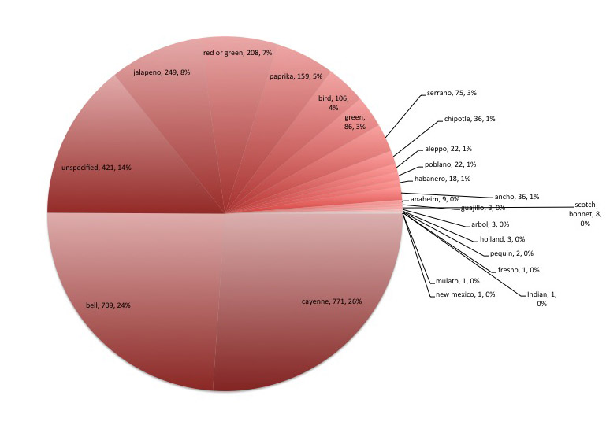
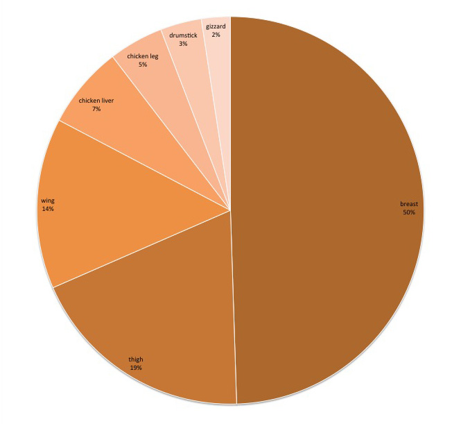

Since 1961 when The New York Times Cookbook was published as single, hardcover bound volume of over 1,000 recipes which had appeared on the paper's pages, edited by then food critic Craig Claiborne, The Times has represented a trusty (mostly analog) resource for people who cook in their own kitchens. With the launch of NYT Cooking this summer and the subsequent release of the accompanying app for desktop and ipad this fall, searching and saving recipes that have been published in The Times over the years is suddenly possible in ways it never was before.
Building the back end that enables the product's features was no easy feat. It is the result of an ongoing process, piloted by Brian Hamman, to digitize and classify data amassed over decades. In many cases, the content was not originally produced or appropriately categorized for the potential range of user interaction achievable today and the conversion is part of a broader effort to leverage the paper's vast archives for its own and its readers' benefit in the digital era.
Mr. Hamman, is the Vice President of Engineering at The New York Times. He sees the project's goal as, "simple." He added, "we want to be the best place to discover the best recipes, period. We believe that by building a site that makes it easy for users to search and browse through our high quality recipes, and building collections to provide a layer of seasonal guidance, that we help people find and make good food."
Those high quality ingredients, over 160,000, of which comprise the archive are probably best suited for making good food, but here I'm using them to serve up some morsels of recontextualized metadata. Bon appetite!
"Variety is the very spice of life, That gives it all its flavor," according to William Cowper who immortalized the sentiment in his 1875 Poem The Task ." Taking Mr. Cowpower to task, I wondered if variety is also the spice of spice. As is turns out, two dozen discrete varieties of chili peppers are cited by the NYT food editors.

When the recipe doesn't suggest discarding the gizzards alltogether or using them to cushion the roasting pan for additional flavor, it often advises trimming their membranes to make stuffing or gravy.
